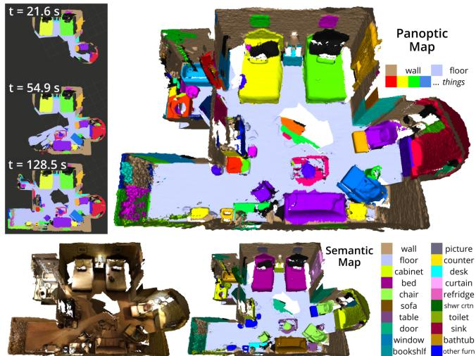
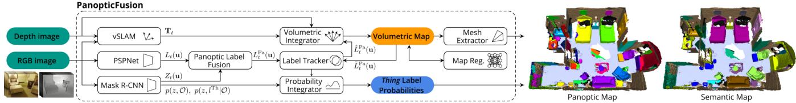
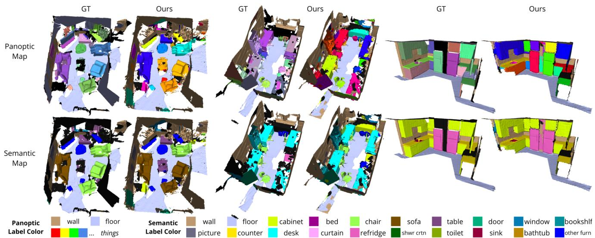

本节目标
读完你应能：① 解释「全景（panoptic）」= stuff（背景类）+ things（实例物体） unified 建图的含义；② 讲清 PanopticFusion 怎么用「单张 TSDF 体素哈希地图」同时存背景语义和前景实例；③ 说明体素标签用「增量/减量权重」更新、跌破阈值换标签的机制；④ 复述它的关联判据（地图参考 + IoU>0.25 贪心独占匹配）与在线 CRF 的正则思路。
和前面课程怎么接
0159 是逐像素语义（只有 stuff 级别），0160 是实例级（只管 things），本课把两者统一成全景——这是语义粒度三档（像素→实例→全景）的收口。0161 的 octree / TSDF 体素在这里延续为「TSDF + 体素哈希（voxblox）」单一全局地图，并挂上 panoptic 标签。0147 的 SAM 也输出 panoptic，可见这已是当代标准粒度。
1. 全景（panoptic）到底是什么
前面两档粒度各有盲区：0159 的逐像素语义，把所有「墙」都标成墙，但不区分「哪面墙」；0160 的实例级，能数清物体，却往往不管「背景墙地」这种没有实例的东西。现实里我们需要两者都要——既要「这面墙是墙」（stuff），又要「这把椅子是第几把」（things）。
全景分割（panoptic segmentation）就是把这两类统一：stuff = 没有实例概念的「背景类」（墙、地、天空）；things = 有独立 ID 的「具体物体」（椅子①、椅子②、人）。PanopticFusion（2019）是第一个在 stuff+things 全景粒度上做在线稠密语义建图的系统。
2. 语义 → 实例 → 全景：三档进阶
怎么看这张图：① 全景 = ①和②的合体，两类信息一张图里都有；② stuff 与 things 用不同上色约定（背景灰、物体绿）；③ 这正是本课 PanopticFusion 要统一建的东西。
要记住的一句话：全景 = 背景类 + 实例物体，两种粒度一张地图一次建完。
3. 表示：单张 TSDF 体素哈希地图
PanopticFusion 的地图是一张全局 TSDF 体素哈希地图（基于 voxblox，CPU 实现）。关键设计是：每个体素除了存 TSDF / 颜色 / 权重，还额外挂一个 panoptic 标签 + 一个权重。注意它存的不是「概率分布」，而是一个「当前标签 + 对它有多自信」的标量权重——这就和 0159 的概率分布、0161 的语义体素都不同。

怎么看这张图：这张图直接展示了「stuff 区域做密集语义标注、things 做个体分割」同时在线进行，并能在全局尺度上重建。它把本课核心——背景与物体统一建图——可视化出来，是理解全景建图最该看的一张。

怎么看这张图：系统总览：输入 RGB-D，分别用 PSPNet（语义）和 Mask R-CNN（实例）出 panoptic 标签，再做标签追踪（地图参考 + IoU）、体素积分、在线 CRF 正则，最终写入那张全局 TSDF 体素哈希地图。整条流水线都围绕「一张图、两种标签」展开。
4. 标签怎么积分：增量 / 减量权重
每个体素的 panoptic 标签不是一锤定音，而是靠增量/减量策略更新：新观测支持当前标签，权重就「+1」；不支持就「−1」。当权重跌破某个阈值，体素就换标签。这让地图能随新证据自我纠正——比如一开始把一个物体误标成墙，多看几帧后权重掉下去，就翻成正确类。
怎么看这张图：① 标签更新是「加减权重」而非硬覆盖，抗单帧噪声；② 阈值机制让错误标签能自我纠正；③ 这比 0159 的纯概率分布更省内存（只存一个标签+一个权重）。
要记住的一句话：PanopticFusion 的体素标签靠「权重加减、跌破即翻」来自我修正。
怎么看这张图：① 先看上面那条时间轴，绿点=看到、红点=被挡；② 再看下面四根柱子，绿色是「+1」的累加、黄色是「−1」的衰减，柱高就是这一格现在有多相信「这里有个标签」；③ 注意 t3→t4 柱子降到很低但没归零——这就是「衰减而不是删除」：一次短暂遮挡不该让标签消失，但长期没观测就该让它淡出；④ 最后一行小字提醒你代价：这种逐格积分 + 在线 CRF 正则，算起来不便宜。
要记住的一句话：语义建图的标签不是「一票定终身」，而是一个被反复加加减减的权重——加是为了稳，减是为了能忘。
5. 关联：地图参考 + IoU > 0.25
things 的实例 ID 怎么跨帧保持一致？PanopticFusion 用地图参考（map reference）+ IoU：把当前帧的每个实例 mask，和地图里已有实例的渲染 mask 求 IoU，阈值 θ_U = 0.25 判为同一实例。匹配策略是按 mask 面积降序、贪心独占匹配——大的先配，配上的就独占，避免前景过分割（一个小 mask 误吞大物体）。things 类的概率还会再做置信度加权融合。
互动判断
PanopticFusion 用「地图参考 + IoU」做实例关联，它的 IoU 阈值（θ_U）是多少？
6. 在线 CRF 正则与复杂度
标签积分后还要做空间正则，让相邻体素标签更一致——用全连接 CRF。它的核心技巧是：一元势用近似 $$p \simeq \tfrac{1}{2}\left(1 + \frac{W^L}{W^D}\right)$$ 其中 $W^L$ 是「标签权重」、$W^D$ 是「深度/几何权重」。更关键的是地图划分（map division）：把体素地图切成最大 25 块的子块分别做 CRF，把复杂度从 $O(NM)$ 降到 $O(NM)/S$，这才让它「在线」勉强可行。
这句话在说什么：一元势 $p$ 衡量「这个体素更像它的标签、还是更像几何」——标签权重相对几何权重越高，越信标签。而把大地图切块处理，是为了不让 CRF 在整张大图上算到天荒地老。
7. 数字与局限
关键数字：体素大小 0.024 m，截断距离 4×0.024；ScanNet v2 隐藏测试集上，instance AP（AP@0.5）47.8（优于 MASC 44.7、3D-SIS 38.2）；全景 PQ 29.7，加 CRF 后 33.5。系统吞吐约 4.3 Hz，瓶颈是 Mask R-CNN（235 ms）。
局限也诚实：CRF 后处理在末帧约 10 s（只能靠只处理相机视锥附近体素块缓解）；3D 语义 avg IoU 不如大体素 3D DNN（TextureNet 56.6 / 3DMV 48.4），因为它没有 3D 大感受野——3D DNN 没接进在线部分。这些都为后面 Kimera（0163）用 DSG 抽更上层抽象埋下对比。

怎么看这张图：这是 ScanNet v2 上的定性结果，展示在真实大场景里 stuff+things 同时被重建与标注。注意右边颜色只是实例的可视化编码，不代表与真值颜色一致——提醒读者看图时盯「结构对不对」，别被配色带偏。
互动判断
PanopticFusion 的「单张全局 TSDF 体素哈希地图」同时存了哪两类标签？
读完你应该能回答
- 「全景（panoptic）」= stuff + things 这句话在说什么？它和 0159 的逐像素语义、0160 的实例级各差在哪？
- PanopticFusion 的地图表示是什么？每个体素除了 TSDF 还挂了什么？
- 体素标签的「增量/减量权重 + 跌破阈值翻标签」机制怎么让地图自我纠正？
- 它的实例关联判据是什么（阈值多少、匹配策略）？和 MID-Fusion 的 0.5 比松还是紧？
- 在线 CRF 的一元势近似 $p \simeq \frac12(1+W^L/W^D)$ 在表达什么？地图划分把复杂度降到了多少？